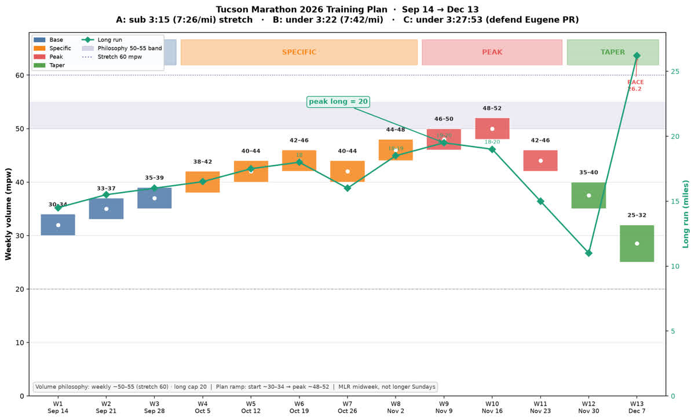
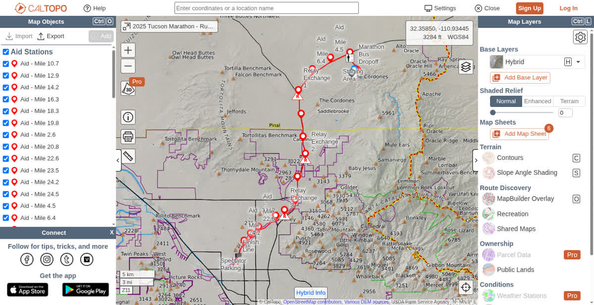
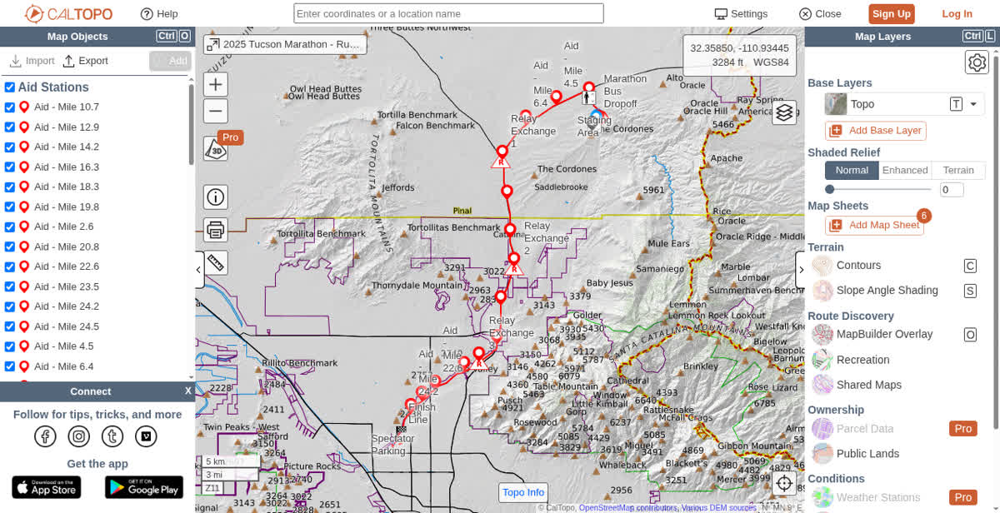
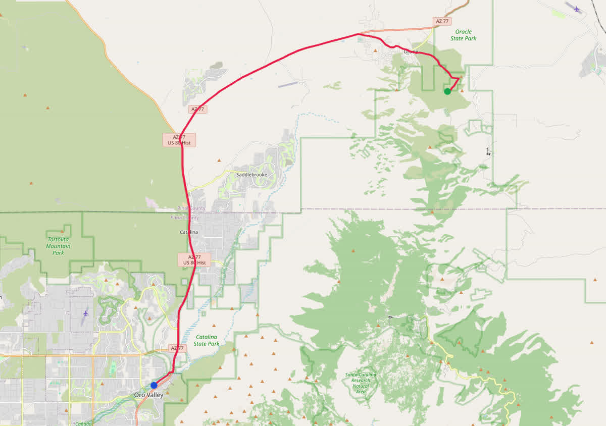
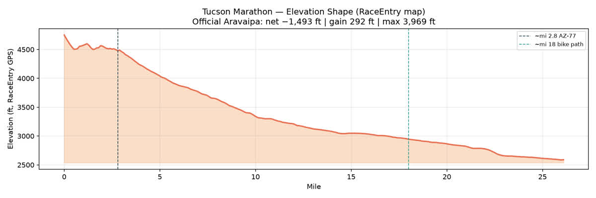

A · Stretch
Sub 3:15
7:26 / mi
Only if peak MP longs + fueling + green recovery land
Biosphere 2 → PCC Northwest. Thirteen weeks of honest goals, midweek volume, and evidence Blake can defend.
Daniels tables: Shamrock HM 1:38:51 ≈ VDOT 46–47; Eugene 3:27:53 ≈ 44–45; marathon 3:15 ≈ 47. Net downhill helps the clock — it does not erase physiology or the Eugene→goal gap.
| Result | Time | VDOT ≈ | Implication |
|---|---|---|---|
| Shamrock HM · Mar 15 | 1:38:51 | 46–47 | Aerobic speed is decent |
| Eugene Marathon · Apr 26 | 3:27:53 | 44–45 | Durability lagged HM equivalence |
| Goal 3:15 | 7:26/mi | ~47 | Top of band with perfect specific prep |
| Goal 3:22 | 7:42/mi | 45–46 | Closer to race-proven fitness |
Every prior build never hit 50 mpw and logged zero midweek MLR ≥10. Tucson spreads load: Wed MLR 10–14, long capped at 20, peak band 50–55.
Interactive 13-week skeleton — phase, mpw band, long, and the session that matters. Wedding week (Sep 8–13) is protect-only before W1.

Point-to-point Biosphere 2 → Cañada del Oro bike path (~mi 18) → PCC Northwest. BQ-friendly net downhill — mile 1 is uphill, and the last 8 collect the bill.




Uphill / rollers — pacers plan ~1:00 slower. Marathon pace here = early HR spike.
After ~mi 2.8 onto AZ-77, sustained downhill. Quads collect interest by halfway.
Shoulder, rumble strips, live traffic, sparse spectators. Mental game over scenery.
Mi 18–26.2 feels flat vs the plunge; bridge bumps + sun. Classic positive-split zone.
Start 40s–low 50s; finish can hit 70s–80s. Dry solar load = late fade.
~17% BQ in 2025. Sub-3:15 fails most from early freewheeling — not not enough downhill.
Controlled warm-up. Use the climb as a natural brake.
Effort discipline — not smash. Soft legs, fuel on schedule.
Hold form into the path transition. Shorten stride on downs.
What's left after you didn't trash the quads early.
Filter by confidence or expand an E## card for claim detail, source, and coach takeaway.
Toggle races to compare Strava-synced 12-week windows. Eugene broke through despite never hitting 50 mpw and zero midweek MLRs.
Non-negotiables from the postmortem + COACH_LOOP. Red days are a veto, not a suggestion.
Week-to-week volume jump >25–30%
Sunday long >20 mi — extend volume via midweek MLR first
Easy pace floor: warn if non-quality runs avg faster than ~8:40 with HR ≥155
≥1 named quality (T or MP continuous) most weeks in specific/peak
Red Oura / niggle: no MP or intervals
Every 3rd–4th week 10–20% volume
Tune-up race: planned rebuild week — not accidental 10 mpw hole
Mandate on all ≥90 min / any MP block: 60–90 g CHO/h
ASICS Novablast 6 ordered. Lock race shoe early — key MP segments + at least one long in race shoe ≥3 weeks out. Ban brand-new shoe debut on race morning.